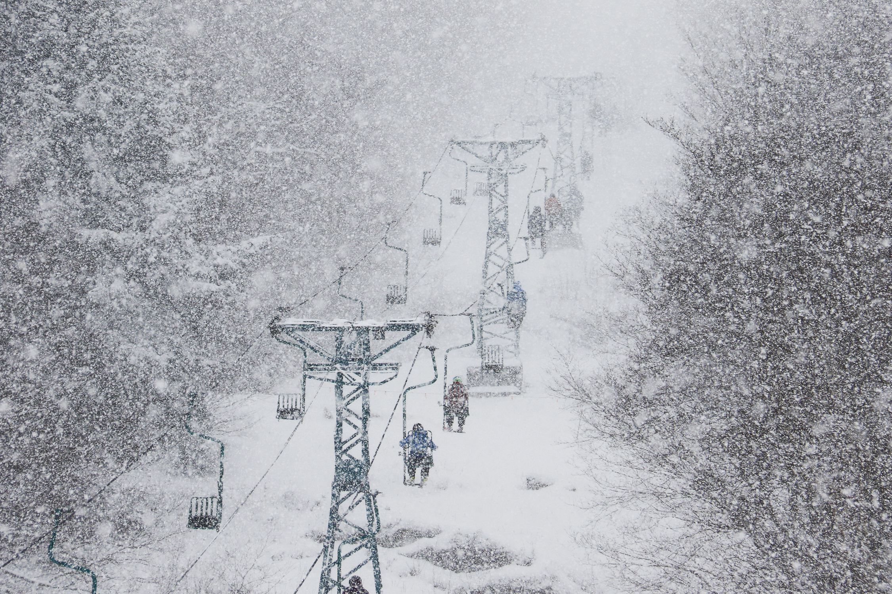

Why do I love Mad River?

I grew up skiing at Mad River Glen. Here are some of my favorite fun facts about this mountain!
- Mad River Glen is home to one of two single chairs in the United States (the other is in Alaska)
- The single chair is the fastest fixed-grip lift in North America
- Mad River Glen is one of only three ski areas in North America that is just skiers (no snowboarders)
- It is my favorite ski mountain (this is a very important fun fact)